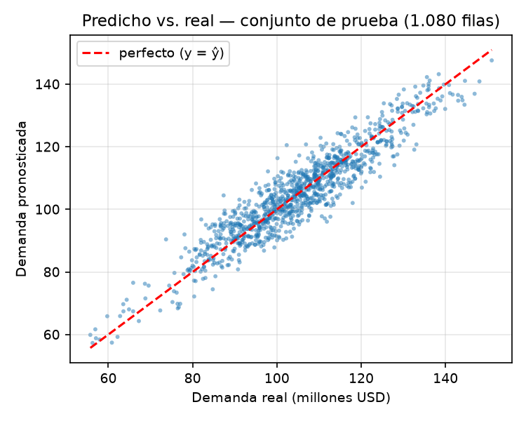
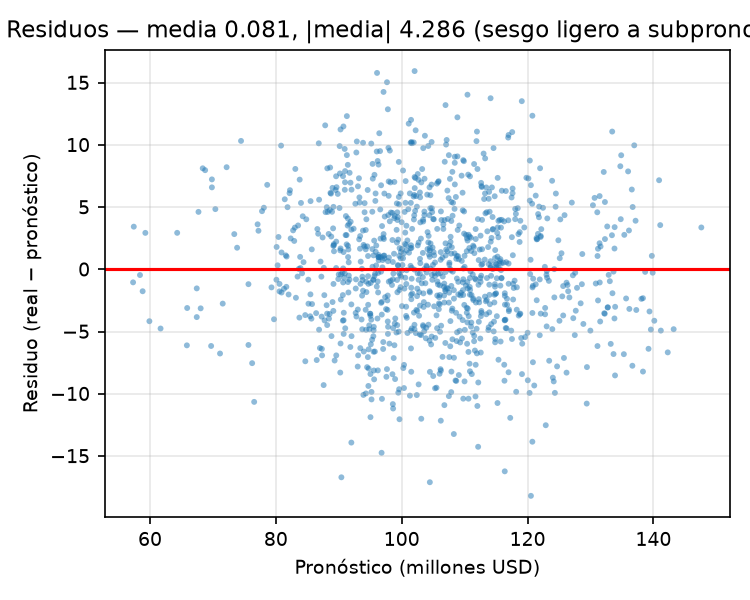
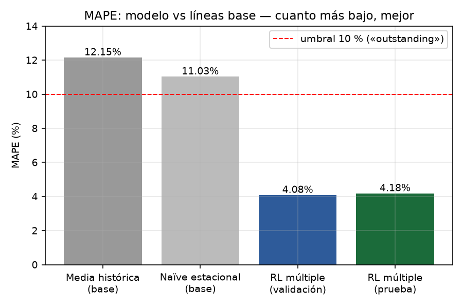

Resultados del modelo
| Métrica | Validación | Prueba (1.080 filas) |
|---|---|---|
| MAPE (métrica principal) | 4,08 % | 4,18 % |
| R² | 0,8833 | 0,8729 |
| Línea base naïve estacional (MAPE) | 11,03 % | 10,67 % |
El modelo supera a la línea base en 6,50 puntos de MAPE y se mantiene bajo el umbral del 10 % que el artículo califica como desempeño sobresaliente.
Predictor interactivo
Todos los campos admiten valores dentro del rango observado en los datos de entrenamiento; el valor por defecto es la mediana de cada columna. La predicción se calcula en el navegador con el mismo pipeline del entrenamiento (estandarización + codificación one-hot + regresión lineal).
Aplicación Streamlit completa
La misma app Streamlit del proyecto corre íntegra en el navegador (stlite/Pyodide,
sin servidor): misma interfaz, mismos rangos derivados de los datos y el mismo modelo,
con motor portable (modelo_web.json) verificado equivalente a scikit-learn.
Evidencia gráfica



Informes
Segunda Entrega (Fase 2) — PDF · Entrega Final (Fase 3) — PDF